from fastai.vision.all import *01wk-1: 이미지 자료 분석 (겉핥기)

1. 강의영상
2. Imports
3. 데이터
- 다운로드 + 압축풀기
untar_data('https://s3.amazonaws.com/fast-ai-imageclas/oxford-iiit-pet.tgz')Path('/root/.fastai/data/oxford-iiit-pet')- 파일탐색
#!ls /root/.fastai/data/oxford-iiit-pet/images- Abyssinian_1.jpg 을 보고싶음
PILImage.create('/root/.fastai/data/oxford-iiit-pet/images/Abyssinian_1.jpg')- Abyssinian_100.jpg를 보고싶다면?
PILImage.create('/root/.fastai/data/oxford-iiit-pet/images/Abyssinian_100.jpg')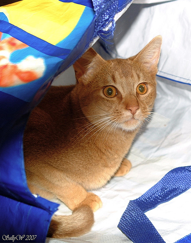
- 그림을 확인 할 수 있는건 좋은데 이렇게 확인하니까 조금 귀찮음.. 아래와 같이 경로+파일명이 정리된 리스트가 있다면 얼마나 좋을까?
lst = ['/root/.fastai/data/oxford-iiit-pet/images/Abyssinian_1.jpg',
'/root/.fastai/data/oxford-iiit-pet/images/Abyssinian_100.jpg']lst[0]'/root/.fastai/data/oxford-iiit-pet/images/Abyssinian_1.jpg'PILImage.create(lst[0])- get_image_files()함수를 이용하여 이미지들의 “경로+파일”이 저장된 image_paths 생성
image_paths = get_image_files('/root/.fastai/data/oxford-iiit-pet/images')
image_paths[0]Path('/root/.fastai/data/oxford-iiit-pet/images/english_setter_124.jpg')- image_paths를 사용하여 그림살펴보기 + 파일명으로 개/고양이 맞춰보기
print(image_paths[0])
display(PILImage.create(image_paths[0]))/root/.fastai/data/oxford-iiit-pet/images/english_setter_124.jpg
print(image_paths[2])
display(PILImage.create(image_paths[2]))/root/.fastai/data/oxford-iiit-pet/images/wheaten_terrier_157.jpg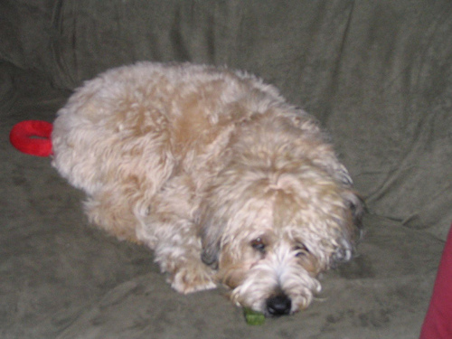
print(image_paths[3])
display(PILImage.create(image_paths[3]))/root/.fastai/data/oxford-iiit-pet/images/Bombay_185.jpg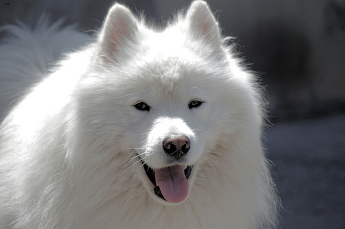
print(image_paths[4])
display(PILImage.create(image_paths[4]))/root/.fastai/data/oxford-iiit-pet/images/leonberger_12.jpg
print(image_paths[5])
display(PILImage.create(image_paths[5]))/root/.fastai/data/oxford-iiit-pet/images/Maine_Coon_207.jpgprint(image_paths[6])
display(PILImage.create(image_paths[6]))/root/.fastai/data/oxford-iiit-pet/images/pomeranian_129.jpgprint(image_paths[7])
display(PILImage.create(image_paths[7]))/root/.fastai/data/oxford-iiit-pet/images/great_pyrenees_14.jpgprint(image_paths[8])
display(PILImage.create(image_paths[8]))/root/.fastai/data/oxford-iiit-pet/images/staffordshire_bull_terrier_81.jpg- 파일명을 보고 cat인지 dog인지 맞추는 방법
- 파일이름이 대문자로 시작하면 고양이, 소문자로 시작하면 강아지다!
- label_func()을 만들어서 “파일이름 -> cat/dog” 의 기능을 하도록 하자.
def label_func(fname):
if fname[0].isupper():
return 'cat'
else:
return 'dog'- dls(=컴퓨터가 이해하기 용이하도록 자료가 정리된 형태)를 만들자.
dls = ImageDataLoaders.from_name_func(
path ='/root/.fastai/data/oxford-iiit-pet/images',
fnames = image_paths,
label_func = label_func,
item_tfms = Resize(224) # 이미지의 크기를 (224,224)로 강제로 맞춰줌
)- dls에 자료들이 잘 정리되어 있는지 확인
dls.show_batch(max_n=25)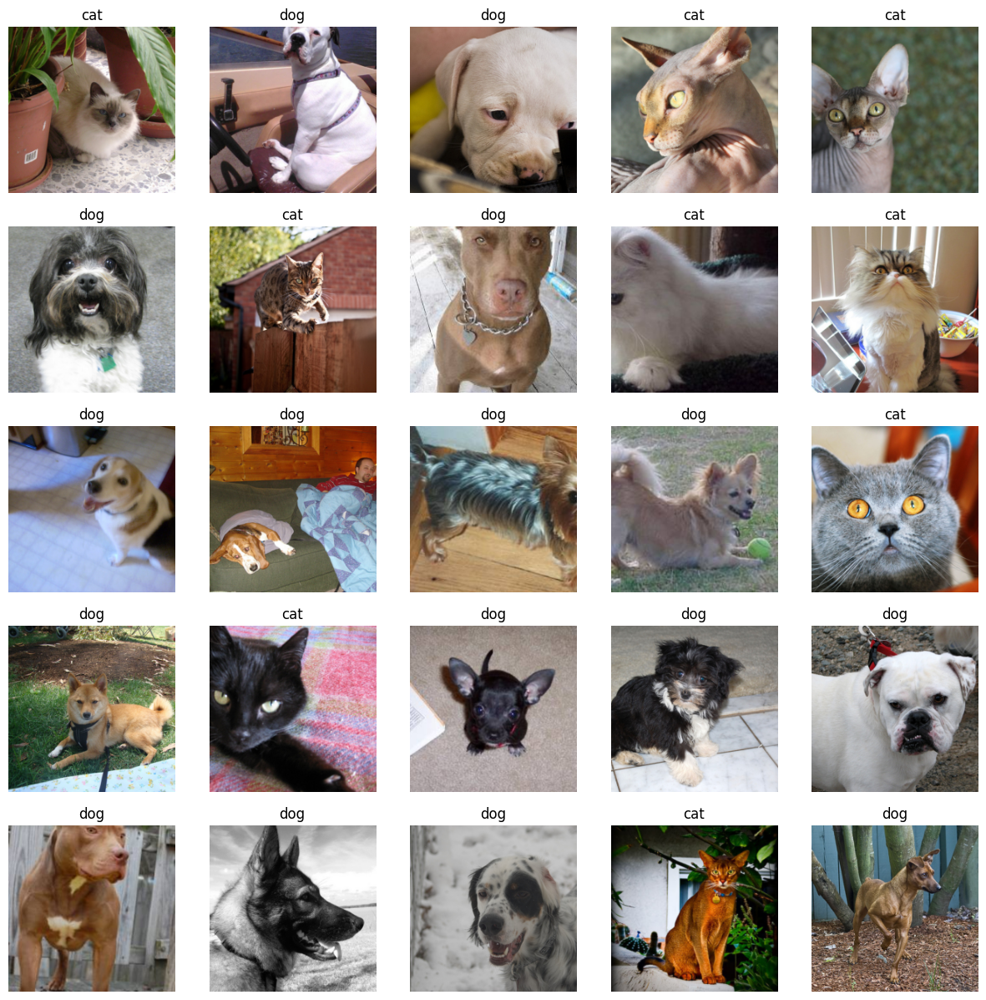
- lrnr 오브젝트 생성
lrnr = vision_learner(
dls = dls,
arch = resnet34,
metrics = accuracy
)- 학습
lrnr.fine_tune(1) # 학습을 하는 함수| epoch | train_loss | valid_loss | accuracy | time |
|---|---|---|---|---|
| 0 | 0.152830 | 0.017476 | 0.995264 | 00:46 |
| epoch | train_loss | valid_loss | accuracy | time |
|---|---|---|---|---|
| 0 | 0.042369 | 0.029130 | 0.991204 | 00:48 |
5. 기존자료를 잘 맞추는지 확인
- image_paths[0] 에 들어있는 사진을 img0으로 저장
img0 = PILImage.create(image_paths[0]) # 강아지
img0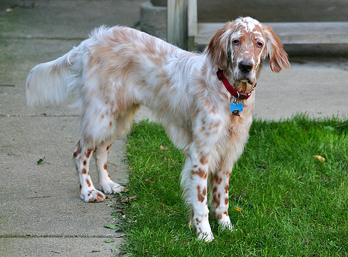
- img0을 예측
lrnr.predict(img0)
#lrnr.predict(PILImage.create(image_paths[0]))
#lrnr.predict(image_paths[0])('dog', tensor(1), tensor([3.8410e-05, 9.9996e-01]))- image_paths[4]에 들어있는 사진을 img4에 저장
img4 = PILImage.create(image_paths[4])
img4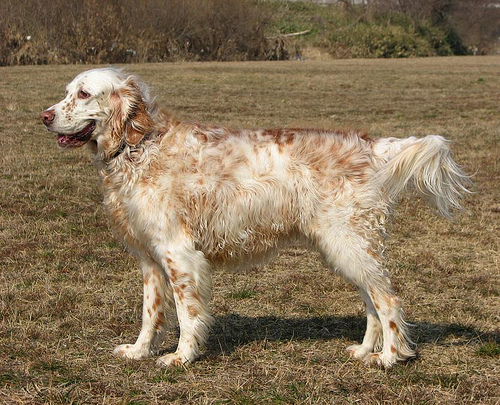
- img4를 예측
lrnr.predict(img4)('dog', tensor(1), tensor([5.9803e-06, 9.9999e-01]))- lrnr.show_results()를 이용하여 몇개의 이미지에 대한 예측결과를 확인
lrnr.show_results()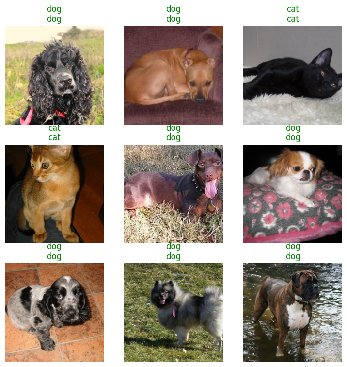
6. 오답분석
- lrnr의 성능이 너무좋아서, 도데체 틀리는 그림이 있기나 한건지 궁금. 그래서 lrnr의 취약점을 분석해줄 inter 오브젝트를 만들어봄.
inter = Interpretation.from_learner(lrnr)- lrnr가 분류하기 어려워한 순서대로 16개의 이미지를 출력
inter.plot_top_losses(16) # 오답을 분석하는 오브젝트는 가장 오류가 높은 이미지를 정렬하여 보여주는 기능이 있음..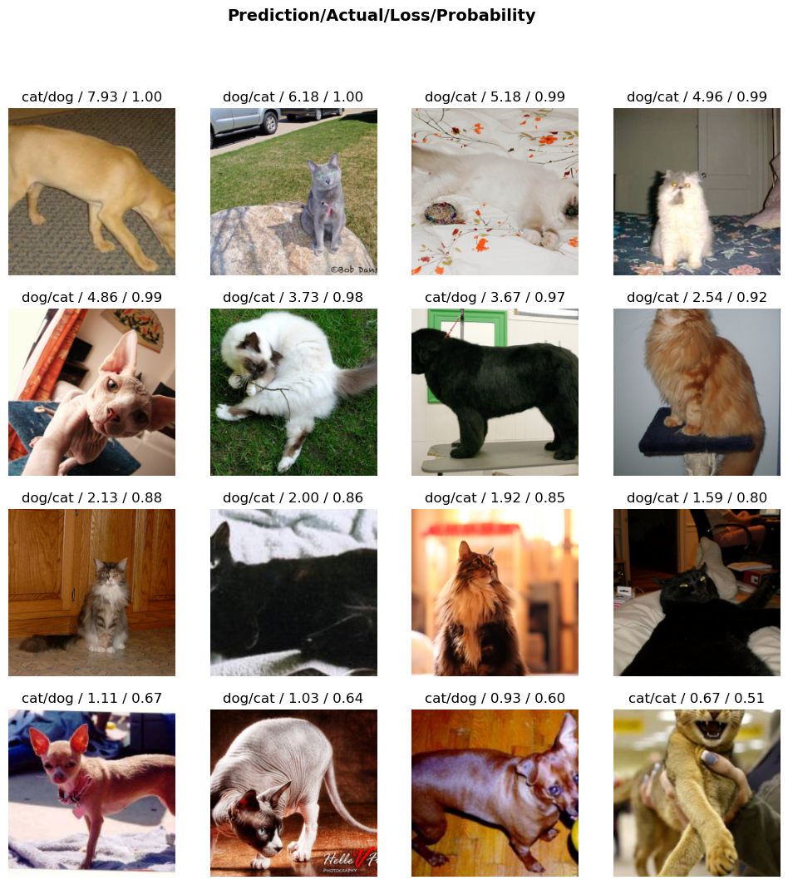
7. 진짜 잘되는게 맞는건가?
- 새로운 이미지를 가지고 와도 lrnr가 분류를 잘 할지 궁금함.
import requestsA. 최하니
hani1 = PILImage.create(requests.get('https://github.com/guebin/DL2024/blob/main/imgs/01wk-hani1.jpeg?raw=true').content)
hani1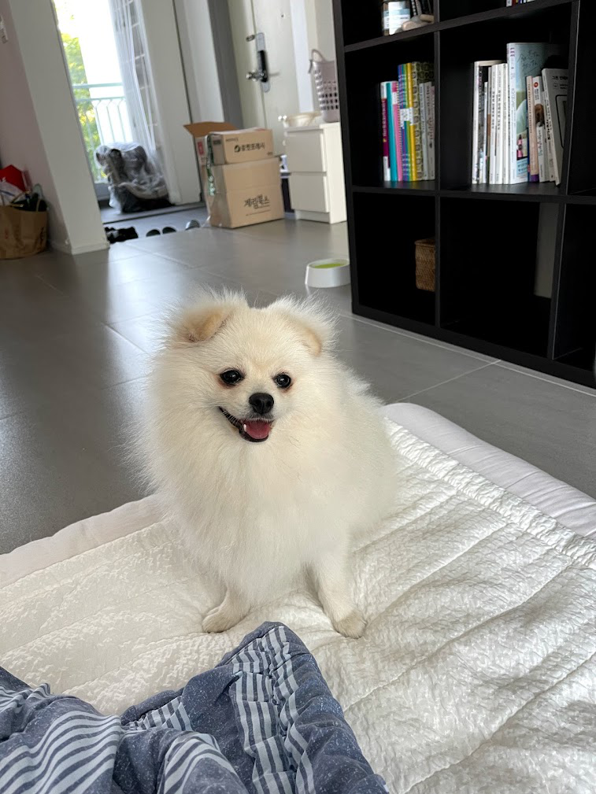
lrnr.predict(hani1)('dog', tensor(1), tensor([2.9308e-09, 1.0000e+00]))hani2 = PILImage.create(requests.get('https://github.com/guebin/DL2024/blob/main/imgs/01wk-hani2.jpeg?raw=true').content)
hani2lrnr.predict(hani2)('dog', tensor(1), tensor([8.9153e-06, 9.9999e-01]))hani3 = PILImage.create(requests.get('https://github.com/guebin/DL2024/blob/main/imgs/01wk-hani3.jpg?raw=true').content)
hani3lrnr.predict(hani3)('dog', tensor(1), tensor([3.9399e-04, 9.9961e-01]))B. 인터넷 고양이
cat1 = PILImage.create(requests.get('https://github.com/guebin/DL2024/blob/main/imgs/01wk-cat1.png?raw=true').content)
cat1lrnr.predict(cat1)('cat', tensor(0), tensor([1.0000e+00, 2.2026e-11]))cat2 = PILImage.create(requests.get('https://github.com/guebin/DL2024/blob/main/imgs/01wk-cat2.jpeg?raw=true').content)
cat2
lrnr.predict(cat2)('cat', tensor(0), tensor([1.0000e+00, 9.4345e-07]))8. 크롤링
- 지금까지는 cat/dog을 분류할 수 있는 인공지능을 만들어 보았음. 이번에는 아이유(iu)와 박혜원(hynn)의 사진을 구분하는 인공지능을 만들어보고 싶음. 데이터가 없으므로 크롤링을 할 생각임.
- 크롤링을 위해서 duckduckgo_search 패키지를 설치하고 search_images()함수를 정의함. 이 함수는 키워드를 입력으로 받으면 이미지의 주소들이 리스트로 정리되어 나오는 기능이 있음.
# 크롤링에 필요한 준비작업들
!pip install -U duckduckgo_search
from duckduckgo_search import DDGSRequirement already satisfied: duckduckgo_search in /usr/local/lib/python3.10/dist-packages (4.5.0)
Requirement already satisfied: click>=8.1.7 in /usr/local/lib/python3.10/dist-packages (from duckduckgo_search) (8.1.7)
Requirement already satisfied: curl-cffi>=0.6.1 in /usr/local/lib/python3.10/dist-packages (from duckduckgo_search) (0.6.2)
Requirement already satisfied: lxml>=5.1.0 in /usr/local/lib/python3.10/dist-packages (from duckduckgo_search) (5.1.0)
Requirement already satisfied: cffi>=1.12.0 in /usr/local/lib/python3.10/dist-packages (from curl-cffi>=0.6.1->duckduckgo_search) (1.16.0)
Requirement already satisfied: certifi in /usr/local/lib/python3.10/dist-packages (from curl-cffi>=0.6.1->duckduckgo_search) (2024.2.2)
Requirement already satisfied: pycparser in /usr/local/lib/python3.10/dist-packages (from cffi>=1.12.0->curl-cffi>=0.6.1->duckduckgo_search) (2.21)def search_images(keyword, max_images=200):
with DDGS() as ddgs:
ddgs_images_gen = ddgs.images(
keyword,
max_results=max_images,
)
results = [r for r in ddgs_images_gen]
image_sources = [r['image'] for r in results]
return image_sources- 다운받은 이미지를 정리할 폴더를 만듦.
# 폴더만드는코드 -- 사실 손으로 만들어도 무방함..
!mkdir images
!mkdir images/train
!mkdir images/train/iu
!mkdir images/train/hynn
# !rm -rf images # 만들어진 폴더를 지우는 코드- 이미지를 다운로드
download_images(dest='./images/train/hynn',urls=search_images('HYNN',max_images=200))
download_images(dest='./images/train/iu',urls=search_images('IU',max_images=200))- 불량이미지가 있을수 있음. 그 목록을 확보
bad_images = verify_images(get_image_files('./images'))
bad_images(#9) [Path('images/train/iu/2bc76ae9-7955-40e5-b2f7-1284d983b549.jpg'),Path('images/train/iu/c8815e7b-d7d3-4f53-8f27-ea950c6cf19f.jpg'),Path('images/train/iu/ccd50b8f-60b4-4801-a9b4-790e5f764995.jpg'),Path('images/train/hynn/b2b36a47-c06e-4a45-b0ed-69217b7e9591.jpeg'),Path('images/train/hynn/cabe41a0-86cd-42c3-9c92-4cc69c218192.jpg'),Path('images/train/hynn/8ae280ea-5dc0-46a9-a2df-4f8c966639af.jpg'),Path('images/train/hynn/666c385a-1859-4e8d-b2d0-f94c62f2aa3c.jpg'),Path('images/train/hynn/a08ee3f0-ff85-487b-8168-6d4623c51984.jpg'),Path('images/train/hynn/53ccde07-f9b5-4c34-8c80-3971a948383e.jpg')]- 불량이미지는 학습에 제거
bad_images.map(Path.unlink)(#9) [None,None,None,None,None,None,None,None,None]9. dls \(\to\) lrnr \(\to\) fit \(\to\) predict
A. Step1: DLS(=데이터) 준비
dls = ImageDataLoaders.from_folder(
path = './images',
train='train',
valid_pct = 0.2,
item_tfms=Resize(224),
)dls.show_batch()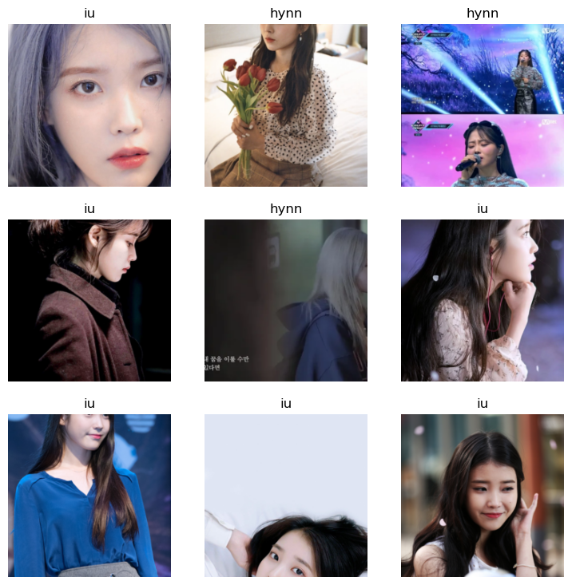
B. Step2: 러너생성
lrnr = vision_learner(
dls = dls,
arch = resnet34,
metrics = accuracy
)C. Step3: 학습
lrnr.fine_tune(7)| epoch | train_loss | valid_loss | accuracy | time |
|---|---|---|---|---|
| 0 | 1.346890 | 0.969989 | 0.657534 | 00:11 |
| epoch | train_loss | valid_loss | accuracy | time |
|---|---|---|---|---|
| 0 | 0.734809 | 0.817061 | 0.698630 | 00:10 |
| 1 | 0.581782 | 0.937060 | 0.739726 | 00:11 |
| 2 | 0.426661 | 0.901986 | 0.835616 | 00:12 |
| 3 | 0.332050 | 0.899157 | 0.835616 | 00:10 |
| 4 | 0.263004 | 0.844802 | 0.849315 | 00:10 |
| 5 | 0.220254 | 0.762331 | 0.849315 | 00:11 |
| 6 | 0.185242 | 0.716601 | 0.849315 | 00:11 |
D. Step4: 예측
lrnr.show_results()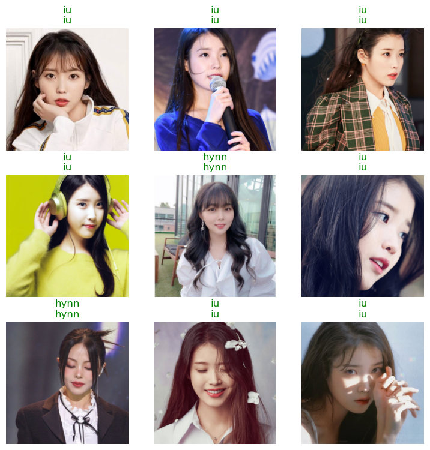
inter = Interpretation.from_learner(lrnr)
inter.plot_top_losses(16)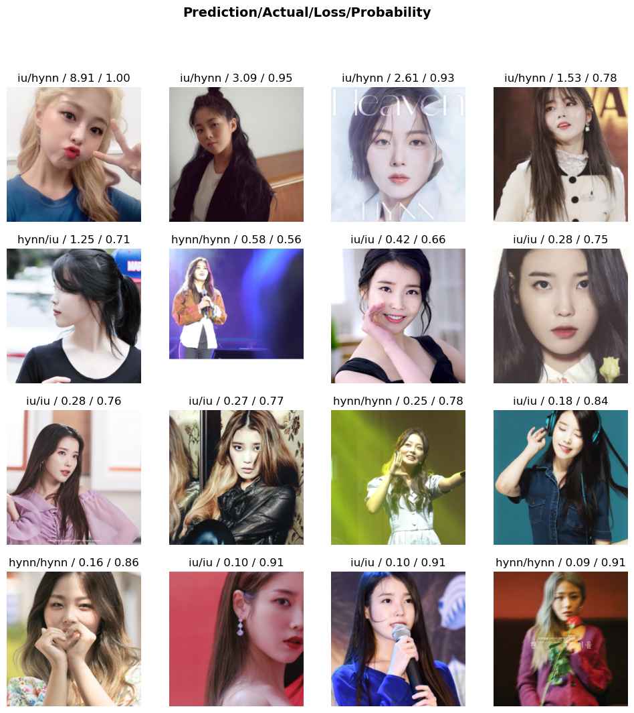
10. 숙제
#. 크롤링을 활용한 이미지 자료 분석
(1) 두 가지 키워드로 크롤링을 수행하여 이미지자료를 모아라. (키워드는 각자 마음에 드는 것으로 설정할 것, 단 (iu,hynn)는 제외)
(2) ImageDataLoaders.from_folder() 를 이용하여 dls를 만들고 dls.show_batch()를 이용하여 만들어진 이미지를 확인하라.
(3) vision_learner()를 이용하여 lrnr를 만들고 lrnr.fine_tune()을 이용하여 학습하라. 이때 모형의 arch는 resnet34를 사용하라.
(4) requests.get()을 이용하여 (1)의 키워드에 해당하는 새로운 이미지를 한장씩 다운받고 (3)에서 학습한 lrnr를 이용하여 예측하라.
제출은 ipynb파일로 할 것. 혹은 스크린샷을 제출해도 괜찮음.